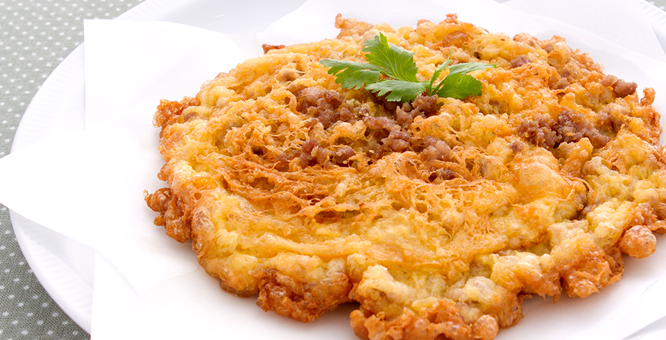

ไข่ต้ม

ไข่ต้ม เป็นอาหารจากไข่ของสัตว์ปีกหรือสัตว์ชนิดอื่นๆ ที่นิยมรับประทานคือ ไข่ไก่ ไข่เป็ด ไข่นกกระทา ทำโดยแช่ไข่ในภาชนะที่มีน้ำ ให้ความร้อนจนเดือด เนื้อไข่ที่เหลวจะแปรสภาพเป็นของแข็ง ถ้าต้มไม่สุก เรียกว่า ไข่ลวก ซึ่งนิยมรับประทานเป็นอาหารเช้า ถ้าไข่ขาวสุกแต่ไข่แดงไม่สุก (ต้ม 7-8 นาที) เรียกว่า ไข่ต้มยางมะตูม ไข่ต้มนำไปทำอาหารต่อยอด เช่น ไข่ลูกเขย ไข่พะโล้ หรือนำมาทำยำไข่ต้ม ไข่ปิ้ง บางที่ ก็ใช้ไข่ต้มมาเสียบไม้ปิ้ง บ้างก็นำไปรับประทานกับสลัดผัก โดยนิยมหั่นเป็นแว่นๆ
